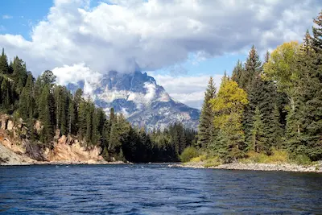
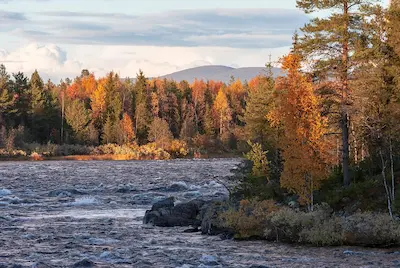

Choose Your Adventure!
| Guided Tours | Snake River Run | Twisting River Rapids | Big Bend Adventure |
|---|---|---|---|
| Location | Jack River | Nenana River | Jack River & Nenana River |
| Duration | 3.5 hours total, 2.5 hours on the water | 6 hours total, 4.5 hours on the water | 3 hours total, 2 hours on the water |
| Rapids | Class I-II | Class III-IV | Class I-IV |
| Departure Times | 10:00 AM, 3:00 PM, and 6:30 PM | 10:00 AM, 3:00 PM, and 6:30 PM | 7:30 AM and 1:00 PM |
| Minimum Requirements | Weight must be over 50 pounds | 12 years and older | 12 years and older |
Snake River Run

Perfect for beginners, this 10-mile adventure will get you hooked! Enjoy the views of Dall sheep, caribou, moose, bald eagles, bears, mountains, and wildflowers. This picturesque journey offers mostly Class I-II rapids, which will leave you ready for more.
Twisting River Rapids

Hold on tight for an epic Alaskan adventure! The thrills are non-stop on this 12-mile
run with Class III-IV rapids, like “the Corkscrew”, “Lost Paddle”, and “Polar
Plunge”. With our expert guides, this is the perfect option for adventurous
beginners.
You will have your choice of an oar raft, which is a great option for first-time
adventurers or a paddle raft, which offers a fully immersive experience. An oar raft
is rowed by one of our expert guides, so you can sit, hold on, and enjoy the ride.
In a paddle raft, you will be expected to follow instructions and participate in
paddling the raft down river. You will still have an expert guide in the paddle raft
and the guide will instruct on how and when to paddle.
Big Bend Adventure

This combines the scenic beauty of the Snake River Run and Twisting River Rapids for
a truly epic white-water adventure. For the first part of our river journey, sit
back and enjoy some of the most beautiful scenery and wildlife with unbelievable
views of the Alaska mountain range. After a stop for lunch, we follow the Jack River
as it flows in the Nenana River into Twisting River Rapids which will give you all
the thrills of Class III-IV rapids, like “the Corkscrew”, “Lost Paddle”, and “Polar
Plunge”!
You will have your choice of an oar raft, which is a great option for first-time
adventurers, or a paddle raft, which offers a fully immersive experience. An oar
raft is rowed by one of our expert guides, so you can sit, hold on, and enjoy the
ride. In a paddle raft, you will be expected to follow instructions and participate
in paddling the raft down river. You will still have an expert guide in the paddle
raft and the guide will instruct on how and when to paddle.